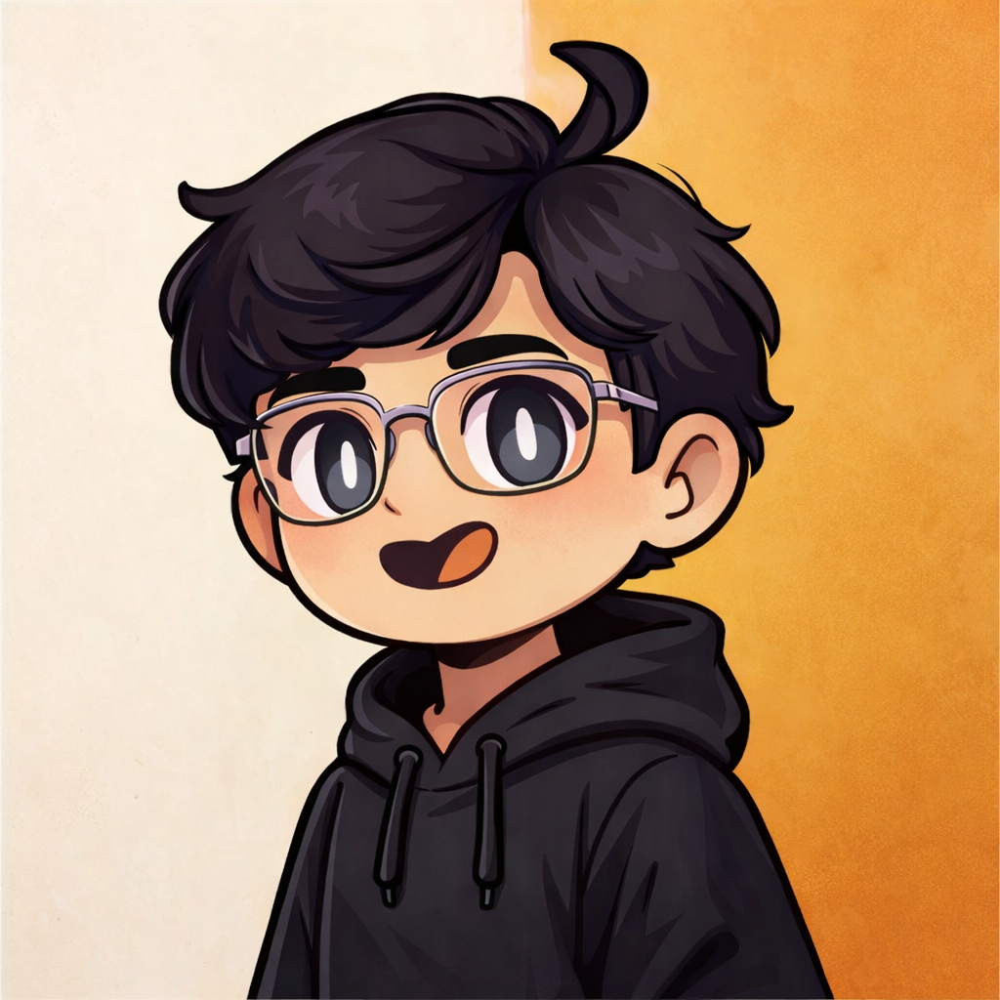

I’m a B.Tech Computer Science student 💻 with a growing passion for cybersecurity, ethical hacking, and SOC operations 🛡️.
Right now, I’m building hands-on experience with tools like Nmap, Wireshark, Burp Suite, Metasploit, and Nessus ⚔️🛡️.
I enjoy analyzing networks, finding vulnerabilities, and learning how to turn weaknesses into stronger defenses.
I work comfortably in Ubuntu and Windows environments 🖥️, and I’m improving my Python scripting 🐍 skills for automation and security analysis.
My goal is to build a solid career in cyber defense, SOC operations, or penetration testing 🎯, where I can apply what I learn to real-world challenges.
More about me

Name: Aditya Kadam
Age: 18
Education: Persuing B-Tech CSE Degree at
ITM Skills university Kharghar